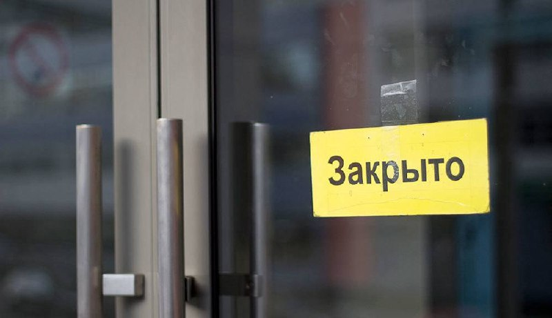

Москвач • Новости Москвы
@moscowach
Москвач • Новости Москвы
@moscowach
Почти на 8 сократилось количество заведений общепита в России за год снижение зафиксировано впервые с 2022 года.

🍽️ Почти на 8% сократилось количество заведений общепита в России за год — снижение зафиксировано впервые с 2022 года.
Среди причин — рост налоговой нагрузки, снижение потребительского спроса и усиление конкуренции со стороны продуктовых магазинов.
Среди причин — рост налоговой нагрузки, снижение потребительского спроса и усиление конкуренции со стороны продуктовых магазинов.